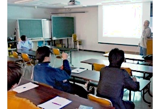
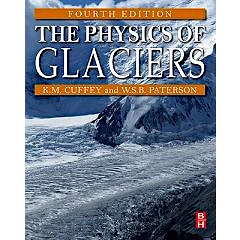

グループセミナー
氷河・氷床グループのメンバーが自らの研究を発表します。 研究室にお越しいただいた海外研究者や当研究室出身者に講話して頂くこともあります。 初回は新入生に学部時代にやっていたことなど、これまでの経験を自己紹介して頂きます。
不定期開催＠低温科学研究所講堂、講義室または会議室。
| 日時 | 発表者 | 題目 |
| 7月23日 10:00~ |
飯塚 芳徳 | |
| 川上 薫 | ||
| グレーべ ラルフ | グリーンランド氷床の多段階スピンアップ法と、氷床の将来変化への影響 |
|
| 7月16日 10:00~ |
波多 俊太郎 | |
| 日下 稜 | ||
| 箕輪 昌紘 | ||
| 7月9日 10:00~ |
松本 真依 | |
| 篠原 俊 | ||
| 7月2日 10:00~ |
杉山 慎 | グリーンランドの海洋性カービング氷河における潮汐、融解、降水による流動変化 |
| 今津 拓郎 | スバルバール諸島での現地観測と人工衛星を用いた氷河湖観測 |
|
| 張 佳晏 | アラスカ南東部タク氷河が前進から後退に転ずる時期の氷河末端位置と流動速度の変化 |
|
| 6月25日 10:00~ |
坂田 宙斗 | 地中レーダーを用いたグリーンランド氷床南東ドームにおける涵養量の時空間変動復元 |
| 山田 宙昂 | グリーンランド北西部カナック氷河におけるUAV測量による表面変化の解析 |
|
| 6月18日 10:00~ |
豊山 孝子 | 氷床下の基盤上の流動についての考察 |
| Félix Grandadam | ビスケー湾の嵐による不安定性 |
|
| 6月11日 10:00~ |
矢澤 宏太郎 | 鹿児島湾におけるイワハダカの音響生物量推定 |
| 平野 瑞幸 | 東南極に産する超高温変成岩中のジルコンの包有物から読み解く変成作用 |
輪読会

氷河に関する基本的知識を身につけるために、みんなで集まって勉強会を行います。
現在読み進めているものは、氷河の物理学を扱ったものとしてはでもっともポピュラーな Cuffey & Paterson の The Physics of Glaciers (4th ed.)です。
学生が担当された分を読み込み、参加者に説明しながら一緒に理解していきます。
§1. Introduction
§2. Transformation of Snow to Ice
§4. Mass Balance Processes
§15. Ice Core Studies
§8. The flow of Ice Masses
雑誌会
雪氷寒冷圏コースに属する学生が、自らの研究テーマに関連する比較的新しい国際論文を紹介します。
修士の学生は年に２回、博士の学生は年１回の発表です。
不定期金曜日 10:30-12:00 低温科学研究所講義室または講堂